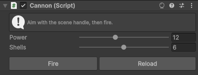
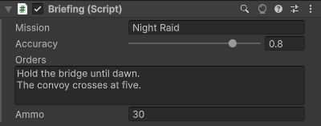
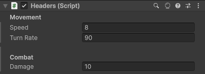
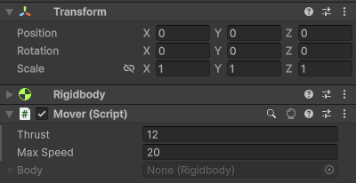
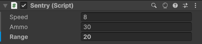

Compatibility
Custom editors
A type with an editor of its own, whether your [CustomEditor], Odin's or another package's, keeps it, with Scry's crystal ball added to its header. To use Scry's Inspector for that type instead, set Style to Scry in the crystal ball's panel. The editor's scene handles, previews and tools keep working either way.

Property drawers
A field with a property drawer, yours, a package's or Unity's own such as [Range] and [TextArea], keeps it: Scry draws that field exactly as Unity does.

Inspector attributes
On fields Scry draws, Unity's attributes that change what a member is or does apply: [HideInInspector] hides the member, which you can unhide from the Hidden list, [Tooltip] is the row's tooltip over your /// summary, and [NonReorderable] keeps a list's order. Unity's layout attributes, [Header] and [Space], have no effect: Scry takes headers from your /// comments. A field whose Style is Unity keeps them.

Unity's components
Transform, Rigidbody and every other Unity component keep their Inspector, and so does a component whose script is missing.

Your data
Scry edits serialized fields through Unity's serialization, so prefab overrides, multi-object editing and undo work as in Unity's Inspector. A field another serializer saves, such as Odin's, shows as not serialized, but that serializer still saves your edits.

Builds
Nothing of Scry runs in a player build: Scry's attributes are compiled out of your code there.
Performance
The analysis runs in the background without blocking the Editor. Live values are read again 10 times a second by default, within a fixed time budget per refresh. If the Inspector feels slow, lower Refresh Rate in Edit > Preferences > Scry.